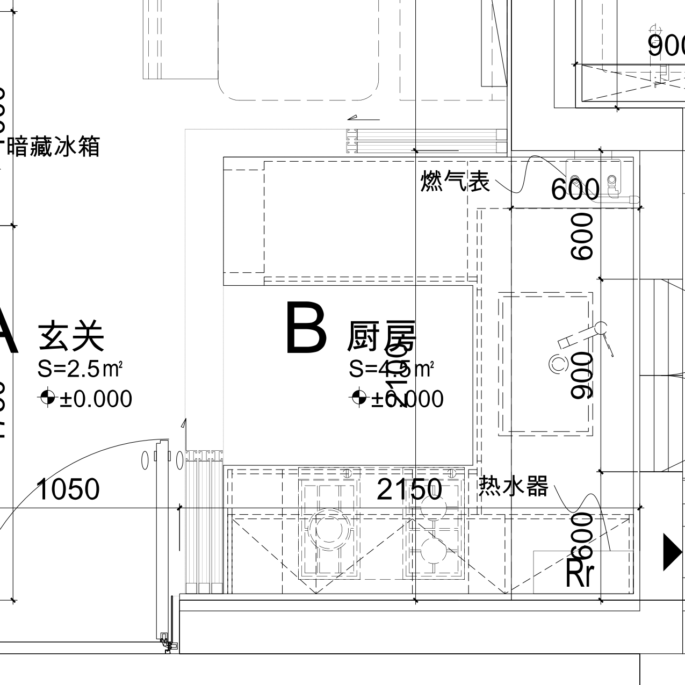
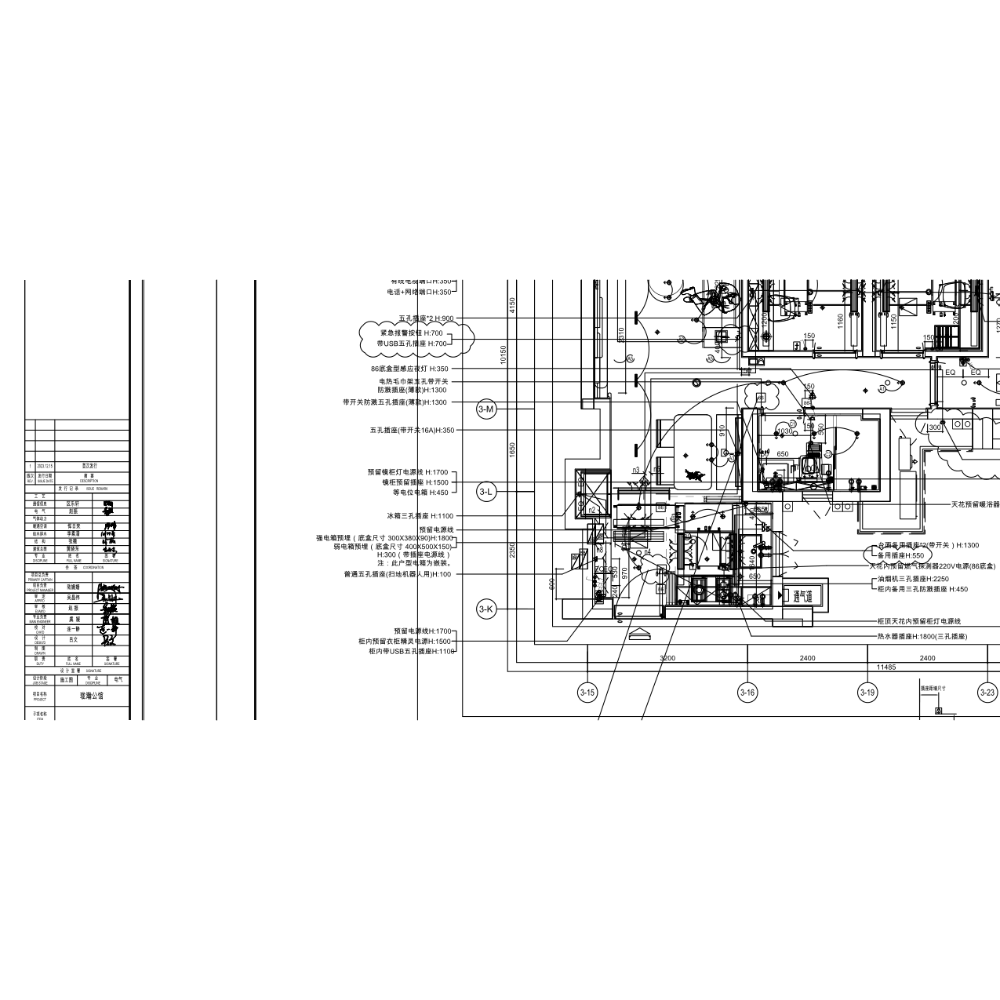
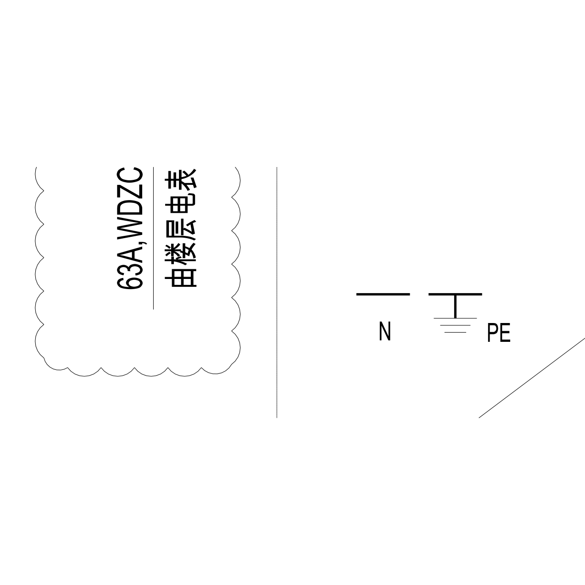

直接检查交付DWG转换的DXF模型空间与布局电气图，图中文字及引线优先于视频推测。
| 项目 | 图纸明确表达 |
|---|---|
| 水槽 | 东侧窗下，中间900mm柜段；两端600mm。900不是水槽产品宽度。 |
| 灶具 | 南侧台面，与烟机对应。 |
| 燃气表 | 东北转角明确标“燃气表”，与视频窗左百叶柜一致。 |
| 热水器 | 东南转角明确标“热水器”，视频窗右接头位置由此确认；模型增加位置范围。 |
| 电气 | 热水器插座H1800（三孔）；强电箱底盒300×380×90、H1800；弱电箱400×500×150，图示H300。强弱电箱在入口侧，非厨房燃气表。 |
| 电表 | 系统图写“由楼层电表箱引来”；室内配电箱不是计量电表。 |
DWG厨房定位标注2150×2100，现模型沿用宜家／完整平面适配基准约1910×2023。两者不一致。因此本次确认了设备所在墙面、转角和明示标注，但不能宣称现有3D厨房框架已毫米级符合DWG；本版未整体移动厨房外墙。柜深柜高、设备外形也不能从柜段尺寸推定。



图纸另注进入厨卫前的明敷／沿墙暗敷要求，不构成现场每条暗管埋深及实际施工路由。